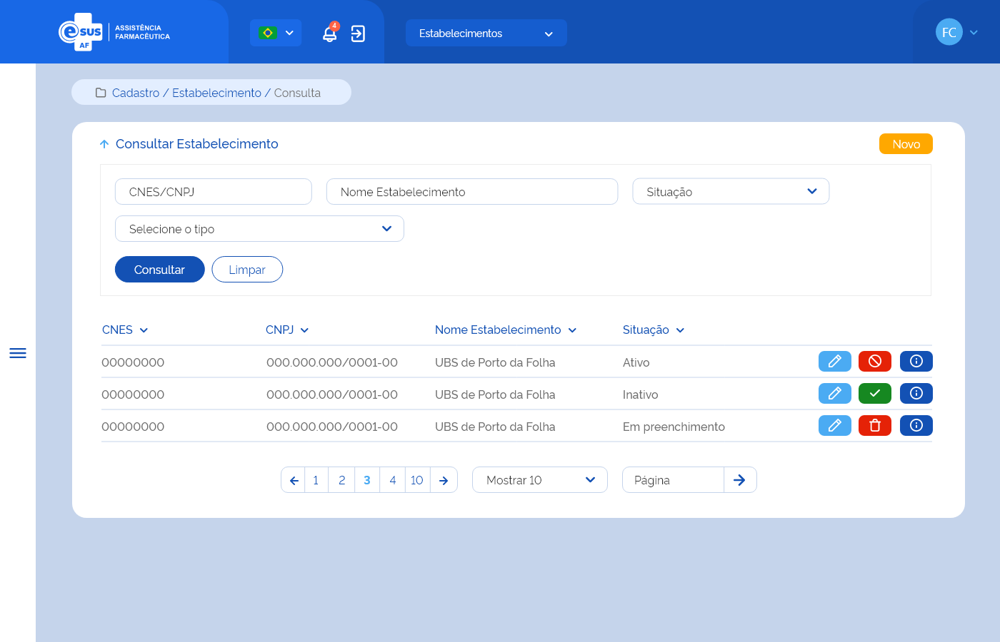

ETE015 - Consultar Estabelecimento de Saúde
Descrição (modelo história de usuário)
Como usuário quero consultar o(s) estabelecimento(s) de saúde dentre os cadastrados e vinculados aos participantes da instância
Protótipo 001

Elementos de Tela
- Bread Crumb – “Cadastro / Estabelecimento / Consulta”
- Título da página – “Consultar Estabelecimento”
- “Seta” – M - retorna para a Tela Inicial/Dashboard
- “Novo” – BT - direciona para a Tela de Cadastrar Estabelecimento
- Filtros para consulta:
- CNES/CNPJ – N (7/14)
- Nome do Estabelecimento – A (150)
- Situação – SU
- Tipo de Estabelecimento – SM
- “Consultar” – BT
- “Limpar” – BT
- Lista de estabelecimentos dentre os participantes da instância do usuário do loga
- CNES (0000000)
- CNPJ (00.000.000/0000-00)
- Nome do Estabelecimento
- Situação – A (9)
- Ações conforme situação:
- Editar – BT - direciona para a Tela de Editar Estabelecimento
- Excluir – BT
- Ativar – BT
- Inativar – BT
- Detalhar – BT - direciona para a Tela de Detalhar Estabelecimento
- Ordenação nas colunas
- Paginação
- Registro por página
- Ir para página
Legenda
TIPO: A = Alfanumérico, N = Numérico, D = Data, M = Imagem, BT = Botão, LK = Link, SU = Seleção Única, SM = Seleção Múltipla, AC = Autocomplete, * = Obrigatório.
Critérios de Aceite
- O usuário somente poderá acessar a funcionalidade caso tenha permissão; RGN001
- O acesso à funcionalidade é dado através do menu lateral no item “Cadastro” quando acionar o subitem “Estabelecimento”;
- Quando o usuário acionar a opção de “Voltar”, o sistema deve retornar para a tela inicial do sistema (dashboard);
- Quando o usuário acionar a opção de “Novo”, o sistema o sistema deve direcionar para a tela de cadastro de um novo estabelecimento de saúde; ETE013
- No campo “Situação”, o sistema deve apresentar as opções: Em preenchimento, Ativo e Inativo;
- No campo “Tipo de Estabelecimento”, o sistema deve apresentar as opções: Almoxarifado/CAF, Almoxarifado Regional/Regional de Saúde e/ou Farmácia/Dispensário;
- Quando o usuário acionar a opção “Consultar”, o sistema deve recuperar e apresentar o(s) estabelecimento(s) de saúde dentre os cadastrados e vinculados os participantes da instância do usuário do logado de acordo com o(s) filtro(s) informado(s). Caso não seja informado nenhum filtro, o sistema deve recuperar e apresentar todo(s) o(s) estabelecimento(s) da instância. Caso algum campo retorne vazio, o sistema deve apresentar a descrição “Sem informação”; RGN002
- O sistema, não encontrando o(s) estabelecimento(s) para os filtros informados, deve informar que o(s) registro(s) não foram encontrados; MSG041
- O sistema, encontrando o(s) estabelecimento(s) de saúde, deve apresentá-lo(s) em ordem decrescente de inclusão com os respectivos dados: CNES, CNPJ, Nome do Estabelecimento, Situação e as ações desejáveis para cada registro;
- No campo “Nome do Estabelecimento”, na grid do resultado, o sistema deve recuperar e apresentar o nome fantasia informado no cadastro do estabelecimento, caso retorne vazio deve apresentar a razão social deste;
- O sistema deve permitir excluir, editar, ativar, inativar ou detalhar um registro de estabelecimento de saúde;
- O sistema deve apresentar as ações conforme:
- Para registro com situação “Ativo”, as opções “Editar”, “Inativar” e “Detalhar”;
- Para registro com situação “Inativo”, as opções “Ativar” e “Detalhar”;
- As grids com resultados de consultas devem permitir a ordenação por coluna, paginação, seleção de registro por página e filtrar o resultado da consulta; RGN004
- Quando o usuário acionar a opção de “Limpar”, o sistema deve limpar o(s) filtro(s) informado(s), o resultado consulta e permanecer na tela de consultar estabelecimento;
- Quando o usuário acionar a opção “Editar”, o sistema deve direcionar para a tela de edição de um estabelecimento de saúde; ETE014
- As opções “Ativar” e “Inativar” somente serão apresentadas para usuários com perfil de “Gestor”;
- Quando o usuário acionar a opção “Inativar”, o sistema deve:
- Verificar se existe(m) produto(s) no estoque do estabelecimento, caso possua apresenta uma mensagem de impedimento; RGN008 MSG013
- Apresentar a mensagem de confirmação ao usuário. Caso o usuário confirme a ação, o sistema altera o estado e a situação do registro para “Inativo” e apresenta a mensagem de sucesso. Caso a ação não seja confirmada, o sistema permanece na tela de consulta; MSG011 MSG049
- Quando o usuário acionar a opção “Ativar”, o sistema deve apresentar a mensagem de confirmação ao usuário. Caso o usuário confirme a ação, o sistema deve o sistema altera o estado e a situação do registro para “Ativo” e apresenta a mensagem de sucesso; MSG012 MSG050
- Quando o usuário acionar a opção “Detalhar”, o sistema deve direcionar para a tela de detalhamento dos dados do estabelecimento de saúde; ETE015
- O sistema deve gravar a data, hora e CPF e nome do usuário que a executou qualquer ação de alteração no registro. RGN005